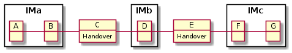

Note
Click here to download the full example code
Example: Train with three IMs¶
Here we investigate the routing specification for example from train-a-f.yml
Given this infrastructure:

This object diagramm shows a szenario for a train from A,B to F,G which is planned to operate in december 2020.
![object "RO/1080/13AB: RoutingInfo" as tr
object "A->C: RouteSection" as ac
object "B->C: RouteSection" as bc
object "C->E: RouteSection" as ce
object "E->F: RouteSection" as ef
object "E->G: RouteSection" as eg
ac : departure_time = 23:30
ac : travel_time = 02:00
ac : calendar = [2020-12-01, 2020-12-31, Sat]
bc : departure_time = 00:30
bc : travel_time = 01:00
bc : calendar = [2020-12-01, 2020-12-31, Mon-Sat]
ce : departure_time = 01:30
ce : travel_time = 23:00
ce : calendar = [2020-12-01, 2020-12-31, daily]
ef : departure_time = 00:30
ef : travel_time = 04:00
ef : calendar = [2020-12-02, 2021-01-01, Wed-Mon]
eg : departure_time = 00:30
eg : travel_time = 08:00
eg : calendar = [2020-12-02, 2021-01-01, Tue]
tr --> ac : begin_section >
tr --> bc : begin_section >
ac ..> ce : connects_to >
bc ..> ce : connects_to >
ce ..> ef : connects_to >
ce ..> eg : connects_to >
note top of ac
Section starts previous day (night shift).
This train passes B at 00:30 on Sundays.
Therefore calender at start must be saturdays.
end note
note as n1
calendar validity starts 2.12.2011 because of double night shift
and last until 1.1.2021 (last section run starts ini new year)
end note
ef <.. n1
eg <.. n1](../_images/plantuml-a999e2521a296ba3607fb2c4364ed2a0a28dda74.png)
from tom.plot import plot_train, plot_graph
from tom.tom import make_train_from_yml, TrainRun, RouteSection, Route
from tom.util import example, dump_routing_info_as_xml
Load example 4 from yaml specification
pattern = 'a-f.yml'
_, t_spec_file = example('../tests/data', pattern)
print(t_spec_file.read_text())
Out:
---
coreID: 13AB
sections:
- departure_station: B
arrival_station: C
travel_time: '01:00:00'
calendar:
begin: &b-begin '2020-12-01'
end: &b-end '2020-12-31'
# Sundays the train starting from A passes B
mask: 'Mon Tue Wed Thu Fri Sat'
id: 10
version: 1
color: salmon
succ:
- 50
- departure_station: A
arrival_station: C
travel_time: '02:00:00'
calendar:
begin: *b-begin
end: *b-end
# Sunday in B => Saturday start in A
mask: 'Sat'
id: 20
color: red
succ:
- 50
- departure_station: C
departure_time: '01:30:00'
arrival_station: E
travel_time: '23:00:00'
calendar:
begin: *b-begin
end: *b-end
# no mask => daily
id: 50
color: cyan
succ:
- 11
- 21
- departure_station: E
arrival_station: F
travel_time: '04:00:00'
calendar:
# 1.12. must be be excluded und 1.1. included
begin: &e-begin '2020-12-02'
end: &e-end '2021-01-01'
# Not on tuesday. On tuesdays section E-G is used.
mask: 'Wed Thu Fri Sat Sun Mon'
id: 11
color: green
- departure_station: E
arrival_station: G
travel_time: '08:00:00'
calendar:
begin: *e-begin
end: *e-end
mask: 'Tue'
id: 21
color: yellowgreen
Create train object and show its train id.
t = make_train_from_yml(t_spec_file)
t.train_id()
Out:
'TR/8350/13AB/00/2020'
Bildfahrplan¶
Show timetable as plot
stations = sorted(t.all_stations())
plot_train(t, all_stations=stations)
Show only the first week
plot_train(t, no_of_runs=7, all_stations=stations)
Route Sections¶
From which sections the train is composed?
section: RouteSection
for section in t.sections:
print(section.description(), "\n")
Out:
ID : 10.v1
Calender : 01/12 to 31/12 1111101111110111111011111101111
Start at: 00:30 in B
Arrival at: 01:30 in C
Successors: [50]
ID : 20.v1
Calender : 05/12 to 26/12 1000000100000010000001
Start at: 23:30 in A
Arrival at: 01:30 in C
Successors: [50]
ID : 50.v1
Calender : 01/12 to 31/12 1111111111111111111111111111111
Start at: 01:30 in C
Arrival at: 00:30 in E
Successors: [11, 21]
ID : 11.v1
Calender : 02/12 to 01/01 1111110111111011111101111110111
Start at: 00:30 in E
Arrival at: 04:30 in F
Successors: []
ID : 21.v1
Calender : 08/12 to 29/12 1000000100000010000001
Start at: 00:30 in E
Arrival at: 08:30 in G
Successors: []
Section graph¶
Sections of example with 3 IMs. This example shows a situation, where the middle section ist used by both starting and ending sections.
sg = t.section_graph()
plot_graph(sg)
Routes¶
Print all possible routes. Routes are calculated from all possible paths in the section graph.
route: Route
for route in t.routes():
print(route.description(), "\n")
Out:
Route : B-C-E-F
Key : 10-50-11
Calendar : 01/12 to 31/12 1111100111110011111001111100111
Start at: 00:30 in B
Arrival at: 01:30 in C
Arrival at: 00:30 in E
Arrival at: 04:30 in F
Route : B-C-E-G
Key : 10-50-21
Calendar : 07/12 to 28/12 1000000100000010000001
Start at: 00:30 in B
Arrival at: 01:30 in C
Arrival at: 00:30 in E
Arrival at: 08:30 in G
Route : A-C-E-F
Key : 20-50-11
Calendar : 05/12 to 26/12 1000000100000010000001
Start at: 23:30 in A
Arrival at: 01:30 in C
Arrival at: 00:30 in E
Arrival at: 04:30 in F
Section runs¶
For each day of the calendar of a section a SectionRun is created. The section runs are the rows of RouteSection.to_dataframe:
for section in t.sections:
print(f"{section.section_id}: {section}")
print(section.to_dataframe(), "\n")
Out:
10: B-C
ID B C
2020-12-01 10 2020-12-01 00:30:00 2020-12-01 01:30:00
2020-12-02 10 2020-12-02 00:30:00 2020-12-02 01:30:00
2020-12-03 10 2020-12-03 00:30:00 2020-12-03 01:30:00
2020-12-04 10 2020-12-04 00:30:00 2020-12-04 01:30:00
2020-12-05 10 2020-12-05 00:30:00 2020-12-05 01:30:00
2020-12-07 10 2020-12-07 00:30:00 2020-12-07 01:30:00
2020-12-08 10 2020-12-08 00:30:00 2020-12-08 01:30:00
2020-12-09 10 2020-12-09 00:30:00 2020-12-09 01:30:00
2020-12-10 10 2020-12-10 00:30:00 2020-12-10 01:30:00
2020-12-11 10 2020-12-11 00:30:00 2020-12-11 01:30:00
2020-12-12 10 2020-12-12 00:30:00 2020-12-12 01:30:00
2020-12-14 10 2020-12-14 00:30:00 2020-12-14 01:30:00
2020-12-15 10 2020-12-15 00:30:00 2020-12-15 01:30:00
2020-12-16 10 2020-12-16 00:30:00 2020-12-16 01:30:00
2020-12-17 10 2020-12-17 00:30:00 2020-12-17 01:30:00
2020-12-18 10 2020-12-18 00:30:00 2020-12-18 01:30:00
2020-12-19 10 2020-12-19 00:30:00 2020-12-19 01:30:00
2020-12-21 10 2020-12-21 00:30:00 2020-12-21 01:30:00
2020-12-22 10 2020-12-22 00:30:00 2020-12-22 01:30:00
2020-12-23 10 2020-12-23 00:30:00 2020-12-23 01:30:00
2020-12-24 10 2020-12-24 00:30:00 2020-12-24 01:30:00
2020-12-25 10 2020-12-25 00:30:00 2020-12-25 01:30:00
2020-12-26 10 2020-12-26 00:30:00 2020-12-26 01:30:00
2020-12-28 10 2020-12-28 00:30:00 2020-12-28 01:30:00
2020-12-29 10 2020-12-29 00:30:00 2020-12-29 01:30:00
2020-12-30 10 2020-12-30 00:30:00 2020-12-30 01:30:00
2020-12-31 10 2020-12-31 00:30:00 2020-12-31 01:30:00
20: A-C
ID A C
2020-12-05 20 2020-12-05 23:30:00 2020-12-06 01:30:00
2020-12-12 20 2020-12-12 23:30:00 2020-12-13 01:30:00
2020-12-19 20 2020-12-19 23:30:00 2020-12-20 01:30:00
2020-12-26 20 2020-12-26 23:30:00 2020-12-27 01:30:00
50: C-E
ID C E
2020-12-01 50 2020-12-01 01:30:00 2020-12-02 00:30:00
2020-12-02 50 2020-12-02 01:30:00 2020-12-03 00:30:00
2020-12-03 50 2020-12-03 01:30:00 2020-12-04 00:30:00
2020-12-04 50 2020-12-04 01:30:00 2020-12-05 00:30:00
2020-12-05 50 2020-12-05 01:30:00 2020-12-06 00:30:00
2020-12-06 50 2020-12-06 01:30:00 2020-12-07 00:30:00
2020-12-07 50 2020-12-07 01:30:00 2020-12-08 00:30:00
2020-12-08 50 2020-12-08 01:30:00 2020-12-09 00:30:00
2020-12-09 50 2020-12-09 01:30:00 2020-12-10 00:30:00
2020-12-10 50 2020-12-10 01:30:00 2020-12-11 00:30:00
2020-12-11 50 2020-12-11 01:30:00 2020-12-12 00:30:00
2020-12-12 50 2020-12-12 01:30:00 2020-12-13 00:30:00
2020-12-13 50 2020-12-13 01:30:00 2020-12-14 00:30:00
2020-12-14 50 2020-12-14 01:30:00 2020-12-15 00:30:00
2020-12-15 50 2020-12-15 01:30:00 2020-12-16 00:30:00
2020-12-16 50 2020-12-16 01:30:00 2020-12-17 00:30:00
2020-12-17 50 2020-12-17 01:30:00 2020-12-18 00:30:00
2020-12-18 50 2020-12-18 01:30:00 2020-12-19 00:30:00
2020-12-19 50 2020-12-19 01:30:00 2020-12-20 00:30:00
2020-12-20 50 2020-12-20 01:30:00 2020-12-21 00:30:00
2020-12-21 50 2020-12-21 01:30:00 2020-12-22 00:30:00
2020-12-22 50 2020-12-22 01:30:00 2020-12-23 00:30:00
2020-12-23 50 2020-12-23 01:30:00 2020-12-24 00:30:00
2020-12-24 50 2020-12-24 01:30:00 2020-12-25 00:30:00
2020-12-25 50 2020-12-25 01:30:00 2020-12-26 00:30:00
2020-12-26 50 2020-12-26 01:30:00 2020-12-27 00:30:00
2020-12-27 50 2020-12-27 01:30:00 2020-12-28 00:30:00
2020-12-28 50 2020-12-28 01:30:00 2020-12-29 00:30:00
2020-12-29 50 2020-12-29 01:30:00 2020-12-30 00:30:00
2020-12-30 50 2020-12-30 01:30:00 2020-12-31 00:30:00
2020-12-31 50 2020-12-31 01:30:00 2021-01-01 00:30:00
11: E-F
ID E F
2020-12-02 11 2020-12-02 00:30:00 2020-12-02 04:30:00
2020-12-03 11 2020-12-03 00:30:00 2020-12-03 04:30:00
2020-12-04 11 2020-12-04 00:30:00 2020-12-04 04:30:00
2020-12-05 11 2020-12-05 00:30:00 2020-12-05 04:30:00
2020-12-06 11 2020-12-06 00:30:00 2020-12-06 04:30:00
2020-12-07 11 2020-12-07 00:30:00 2020-12-07 04:30:00
2020-12-09 11 2020-12-09 00:30:00 2020-12-09 04:30:00
2020-12-10 11 2020-12-10 00:30:00 2020-12-10 04:30:00
2020-12-11 11 2020-12-11 00:30:00 2020-12-11 04:30:00
2020-12-12 11 2020-12-12 00:30:00 2020-12-12 04:30:00
2020-12-13 11 2020-12-13 00:30:00 2020-12-13 04:30:00
2020-12-14 11 2020-12-14 00:30:00 2020-12-14 04:30:00
2020-12-16 11 2020-12-16 00:30:00 2020-12-16 04:30:00
2020-12-17 11 2020-12-17 00:30:00 2020-12-17 04:30:00
2020-12-18 11 2020-12-18 00:30:00 2020-12-18 04:30:00
2020-12-19 11 2020-12-19 00:30:00 2020-12-19 04:30:00
2020-12-20 11 2020-12-20 00:30:00 2020-12-20 04:30:00
2020-12-21 11 2020-12-21 00:30:00 2020-12-21 04:30:00
2020-12-23 11 2020-12-23 00:30:00 2020-12-23 04:30:00
2020-12-24 11 2020-12-24 00:30:00 2020-12-24 04:30:00
2020-12-25 11 2020-12-25 00:30:00 2020-12-25 04:30:00
2020-12-26 11 2020-12-26 00:30:00 2020-12-26 04:30:00
2020-12-27 11 2020-12-27 00:30:00 2020-12-27 04:30:00
2020-12-28 11 2020-12-28 00:30:00 2020-12-28 04:30:00
2020-12-30 11 2020-12-30 00:30:00 2020-12-30 04:30:00
2020-12-31 11 2020-12-31 00:30:00 2020-12-31 04:30:00
2021-01-01 11 2021-01-01 00:30:00 2021-01-01 04:30:00
21: E-G
ID E G
2020-12-08 21 2020-12-08 00:30:00 2020-12-08 08:30:00
2020-12-15 21 2020-12-15 00:30:00 2020-12-15 08:30:00
2020-12-22 21 2020-12-22 00:30:00 2020-12-22 08:30:00
2020-12-29 21 2020-12-29 00:30:00 2020-12-29 08:30:00
TrainRuns¶
Each TrainRun defines a row in the timetable of the train above.
tr: TrainRun
for tr in t.train_run_iterator():
print(tr)
for sr in tr.sections_runs:
print(sr)
print("\n")
Out:
TR/8350/13AB/10/2020/2020-12-01
10.v1:2020-12-01 00:30 OTR=0 B-C 2020-12-01 01:30 OTR=0
50.v1:2020-12-01 01:30 OTR=0 C-E 2020-12-02 00:30 OTR=1
11.v1:2020-12-02 00:30 OTR=1 E-F 2020-12-02 04:30 OTR=1
TR/8350/13AB/10/2020/2020-12-02
10.v1:2020-12-02 00:30 OTR=0 B-C 2020-12-02 01:30 OTR=0
50.v1:2020-12-02 01:30 OTR=0 C-E 2020-12-03 00:30 OTR=1
11.v1:2020-12-03 00:30 OTR=1 E-F 2020-12-03 04:30 OTR=1
TR/8350/13AB/10/2020/2020-12-03
10.v1:2020-12-03 00:30 OTR=0 B-C 2020-12-03 01:30 OTR=0
50.v1:2020-12-03 01:30 OTR=0 C-E 2020-12-04 00:30 OTR=1
11.v1:2020-12-04 00:30 OTR=1 E-F 2020-12-04 04:30 OTR=1
TR/8350/13AB/10/2020/2020-12-04
10.v1:2020-12-04 00:30 OTR=0 B-C 2020-12-04 01:30 OTR=0
50.v1:2020-12-04 01:30 OTR=0 C-E 2020-12-05 00:30 OTR=1
11.v1:2020-12-05 00:30 OTR=1 E-F 2020-12-05 04:30 OTR=1
TR/8350/13AB/10/2020/2020-12-05
10.v1:2020-12-05 00:30 OTR=0 B-C 2020-12-05 01:30 OTR=0
50.v1:2020-12-05 01:30 OTR=0 C-E 2020-12-06 00:30 OTR=1
11.v1:2020-12-06 00:30 OTR=1 E-F 2020-12-06 04:30 OTR=1
TR/8350/13AB/10/2020/2020-12-07
10.v1:2020-12-07 00:30 OTR=0 B-C 2020-12-07 01:30 OTR=0
50.v1:2020-12-07 01:30 OTR=0 C-E 2020-12-08 00:30 OTR=1
21.v1:2020-12-08 00:30 OTR=1 E-G 2020-12-08 08:30 OTR=1
TR/8350/13AB/10/2020/2020-12-08
10.v1:2020-12-08 00:30 OTR=0 B-C 2020-12-08 01:30 OTR=0
50.v1:2020-12-08 01:30 OTR=0 C-E 2020-12-09 00:30 OTR=1
11.v1:2020-12-09 00:30 OTR=1 E-F 2020-12-09 04:30 OTR=1
TR/8350/13AB/10/2020/2020-12-09
10.v1:2020-12-09 00:30 OTR=0 B-C 2020-12-09 01:30 OTR=0
50.v1:2020-12-09 01:30 OTR=0 C-E 2020-12-10 00:30 OTR=1
11.v1:2020-12-10 00:30 OTR=1 E-F 2020-12-10 04:30 OTR=1
TR/8350/13AB/10/2020/2020-12-10
10.v1:2020-12-10 00:30 OTR=0 B-C 2020-12-10 01:30 OTR=0
50.v1:2020-12-10 01:30 OTR=0 C-E 2020-12-11 00:30 OTR=1
11.v1:2020-12-11 00:30 OTR=1 E-F 2020-12-11 04:30 OTR=1
TR/8350/13AB/10/2020/2020-12-11
10.v1:2020-12-11 00:30 OTR=0 B-C 2020-12-11 01:30 OTR=0
50.v1:2020-12-11 01:30 OTR=0 C-E 2020-12-12 00:30 OTR=1
11.v1:2020-12-12 00:30 OTR=1 E-F 2020-12-12 04:30 OTR=1
TR/8350/13AB/10/2020/2020-12-12
10.v1:2020-12-12 00:30 OTR=0 B-C 2020-12-12 01:30 OTR=0
50.v1:2020-12-12 01:30 OTR=0 C-E 2020-12-13 00:30 OTR=1
11.v1:2020-12-13 00:30 OTR=1 E-F 2020-12-13 04:30 OTR=1
TR/8350/13AB/10/2020/2020-12-14
10.v1:2020-12-14 00:30 OTR=0 B-C 2020-12-14 01:30 OTR=0
50.v1:2020-12-14 01:30 OTR=0 C-E 2020-12-15 00:30 OTR=1
21.v1:2020-12-15 00:30 OTR=1 E-G 2020-12-15 08:30 OTR=1
TR/8350/13AB/10/2020/2020-12-15
10.v1:2020-12-15 00:30 OTR=0 B-C 2020-12-15 01:30 OTR=0
50.v1:2020-12-15 01:30 OTR=0 C-E 2020-12-16 00:30 OTR=1
11.v1:2020-12-16 00:30 OTR=1 E-F 2020-12-16 04:30 OTR=1
TR/8350/13AB/10/2020/2020-12-16
10.v1:2020-12-16 00:30 OTR=0 B-C 2020-12-16 01:30 OTR=0
50.v1:2020-12-16 01:30 OTR=0 C-E 2020-12-17 00:30 OTR=1
11.v1:2020-12-17 00:30 OTR=1 E-F 2020-12-17 04:30 OTR=1
TR/8350/13AB/10/2020/2020-12-17
10.v1:2020-12-17 00:30 OTR=0 B-C 2020-12-17 01:30 OTR=0
50.v1:2020-12-17 01:30 OTR=0 C-E 2020-12-18 00:30 OTR=1
11.v1:2020-12-18 00:30 OTR=1 E-F 2020-12-18 04:30 OTR=1
TR/8350/13AB/10/2020/2020-12-18
10.v1:2020-12-18 00:30 OTR=0 B-C 2020-12-18 01:30 OTR=0
50.v1:2020-12-18 01:30 OTR=0 C-E 2020-12-19 00:30 OTR=1
11.v1:2020-12-19 00:30 OTR=1 E-F 2020-12-19 04:30 OTR=1
TR/8350/13AB/10/2020/2020-12-19
10.v1:2020-12-19 00:30 OTR=0 B-C 2020-12-19 01:30 OTR=0
50.v1:2020-12-19 01:30 OTR=0 C-E 2020-12-20 00:30 OTR=1
11.v1:2020-12-20 00:30 OTR=1 E-F 2020-12-20 04:30 OTR=1
TR/8350/13AB/10/2020/2020-12-21
10.v1:2020-12-21 00:30 OTR=0 B-C 2020-12-21 01:30 OTR=0
50.v1:2020-12-21 01:30 OTR=0 C-E 2020-12-22 00:30 OTR=1
21.v1:2020-12-22 00:30 OTR=1 E-G 2020-12-22 08:30 OTR=1
TR/8350/13AB/10/2020/2020-12-22
10.v1:2020-12-22 00:30 OTR=0 B-C 2020-12-22 01:30 OTR=0
50.v1:2020-12-22 01:30 OTR=0 C-E 2020-12-23 00:30 OTR=1
11.v1:2020-12-23 00:30 OTR=1 E-F 2020-12-23 04:30 OTR=1
TR/8350/13AB/10/2020/2020-12-23
10.v1:2020-12-23 00:30 OTR=0 B-C 2020-12-23 01:30 OTR=0
50.v1:2020-12-23 01:30 OTR=0 C-E 2020-12-24 00:30 OTR=1
11.v1:2020-12-24 00:30 OTR=1 E-F 2020-12-24 04:30 OTR=1
TR/8350/13AB/10/2020/2020-12-24
10.v1:2020-12-24 00:30 OTR=0 B-C 2020-12-24 01:30 OTR=0
50.v1:2020-12-24 01:30 OTR=0 C-E 2020-12-25 00:30 OTR=1
11.v1:2020-12-25 00:30 OTR=1 E-F 2020-12-25 04:30 OTR=1
TR/8350/13AB/10/2020/2020-12-25
10.v1:2020-12-25 00:30 OTR=0 B-C 2020-12-25 01:30 OTR=0
50.v1:2020-12-25 01:30 OTR=0 C-E 2020-12-26 00:30 OTR=1
11.v1:2020-12-26 00:30 OTR=1 E-F 2020-12-26 04:30 OTR=1
TR/8350/13AB/10/2020/2020-12-26
10.v1:2020-12-26 00:30 OTR=0 B-C 2020-12-26 01:30 OTR=0
50.v1:2020-12-26 01:30 OTR=0 C-E 2020-12-27 00:30 OTR=1
11.v1:2020-12-27 00:30 OTR=1 E-F 2020-12-27 04:30 OTR=1
TR/8350/13AB/10/2020/2020-12-28
10.v1:2020-12-28 00:30 OTR=0 B-C 2020-12-28 01:30 OTR=0
50.v1:2020-12-28 01:30 OTR=0 C-E 2020-12-29 00:30 OTR=1
21.v1:2020-12-29 00:30 OTR=1 E-G 2020-12-29 08:30 OTR=1
TR/8350/13AB/10/2020/2020-12-29
10.v1:2020-12-29 00:30 OTR=0 B-C 2020-12-29 01:30 OTR=0
50.v1:2020-12-29 01:30 OTR=0 C-E 2020-12-30 00:30 OTR=1
11.v1:2020-12-30 00:30 OTR=1 E-F 2020-12-30 04:30 OTR=1
TR/8350/13AB/10/2020/2020-12-30
10.v1:2020-12-30 00:30 OTR=0 B-C 2020-12-30 01:30 OTR=0
50.v1:2020-12-30 01:30 OTR=0 C-E 2020-12-31 00:30 OTR=1
11.v1:2020-12-31 00:30 OTR=1 E-F 2020-12-31 04:30 OTR=1
TR/8350/13AB/10/2020/2020-12-31
10.v1:2020-12-31 00:30 OTR=0 B-C 2020-12-31 01:30 OTR=0
50.v1:2020-12-31 01:30 OTR=0 C-E 2021-01-01 00:30 OTR=30
11.v1:2021-01-01 00:30 OTR=30 E-F 2021-01-01 04:30 OTR=30
TR/8350/13AB/20/2020/2020-12-05
20.v1:2020-12-05 23:30 OTR=-1 A-C 2020-12-06 01:30 OTR=0
50.v1:2020-12-06 01:30 OTR=0 C-E 2020-12-07 00:30 OTR=1
11.v1:2020-12-07 00:30 OTR=1 E-F 2020-12-07 04:30 OTR=1
TR/8350/13AB/20/2020/2020-12-12
20.v1:2020-12-12 23:30 OTR=-1 A-C 2020-12-13 01:30 OTR=0
50.v1:2020-12-13 01:30 OTR=0 C-E 2020-12-14 00:30 OTR=1
11.v1:2020-12-14 00:30 OTR=1 E-F 2020-12-14 04:30 OTR=1
TR/8350/13AB/20/2020/2020-12-19
20.v1:2020-12-19 23:30 OTR=-1 A-C 2020-12-20 01:30 OTR=0
50.v1:2020-12-20 01:30 OTR=0 C-E 2020-12-21 00:30 OTR=1
11.v1:2020-12-21 00:30 OTR=1 E-F 2020-12-21 04:30 OTR=1
TR/8350/13AB/20/2020/2020-12-26
20.v1:2020-12-26 23:30 OTR=-1 A-C 2020-12-27 01:30 OTR=0
50.v1:2020-12-27 01:30 OTR=0 C-E 2020-12-28 00:30 OTR=1
11.v1:2020-12-28 00:30 OTR=1 E-F 2020-12-28 04:30 OTR=1
RoutingInformation as TrainInformation¶
An XML Dump of the routing information of this example according a new version of the TSI XSD.
print(dump_routing_info_as_xml(t))
Out:
<TrainInformation xmlns="http://taf-jsg.info/schemes" xmlns:xsi="http://www.w3.org/2001/XMLSchema-instance" xsi:schemaLocation="http://taf-jsg.info/schemes file:///../tests/data/xml/taf_cat_complete_sector.xsd" RouteInfoVersion="1">
<RouteSection SectionVersion="1">
<SectionID>
<ObjectType>RS</ObjectType>
<Company>8350</Company>
<Core>--------13AB</Core>
<Variant>10</Variant>
<TimetableYear>2020</TimetableYear>
</SectionID>
<PlannedJourneyLocation>
<CountryCodeISO>DE</CountryCodeISO>
<LocationPrimaryCode>10001</LocationPrimaryCode>
<PrimaryLocationName>B</PrimaryLocationName>
<TimingAtLocation>
<Timing>
<Time>00:30:00</Time>
<Offset>0</Offset>
</Timing>
</TimingAtLocation>
</PlannedJourneyLocation>
<PlannedJourneyLocation>
<CountryCodeISO>DE</CountryCodeISO>
<LocationPrimaryCode>10002</LocationPrimaryCode>
<PrimaryLocationName>C</PrimaryLocationName>
<TimingAtLocation>
<Timing>
<Time>01:30:00</Time>
<Offset>0</Offset>
</Timing>
</TimingAtLocation>
</PlannedJourneyLocation>
<PlannedCalendar>
<BitmapDays>1111101111110111111011111101111</BitmapDays>
<ValidityPeriod>
<StartDateTime>2020-12-01T00:00:00</StartDateTime>
<EndDateTime>2020-12-31T00:00:00</EndDateTime>
</ValidityPeriod>
</PlannedCalendar>
<Successors>
<SectionID>
<ObjectType>RS</ObjectType>
<Company>8350</Company>
<Core>--------13AB</Core>
<Variant>50</Variant>
<TimetableYear>2020</TimetableYear>
</SectionID>
</Successors>
</RouteSection>
<RouteSection SectionVersion="1">
<SectionID>
<ObjectType>RS</ObjectType>
<Company>8350</Company>
<Core>--------13AB</Core>
<Variant>20</Variant>
<TimetableYear>2020</TimetableYear>
</SectionID>
<PlannedJourneyLocation>
<CountryCodeISO>DE</CountryCodeISO>
<LocationPrimaryCode>10000</LocationPrimaryCode>
<PrimaryLocationName>A</PrimaryLocationName>
<TimingAtLocation>
<Timing>
<Time>23:30:00</Time>
<Offset>0</Offset>
</Timing>
</TimingAtLocation>
</PlannedJourneyLocation>
<PlannedJourneyLocation>
<CountryCodeISO>DE</CountryCodeISO>
<LocationPrimaryCode>10002</LocationPrimaryCode>
<PrimaryLocationName>C</PrimaryLocationName>
<TimingAtLocation>
<Timing>
<Time>01:30:00</Time>
<Offset>1</Offset>
</Timing>
</TimingAtLocation>
</PlannedJourneyLocation>
<PlannedCalendar>
<BitmapDays>1000000100000010000001</BitmapDays>
<ValidityPeriod>
<StartDateTime>2020-12-05T00:00:00</StartDateTime>
<EndDateTime>2020-12-26T00:00:00</EndDateTime>
</ValidityPeriod>
</PlannedCalendar>
<Successors>
<SectionID>
<ObjectType>RS</ObjectType>
<Company>8350</Company>
<Core>--------13AB</Core>
<Variant>50</Variant>
<TimetableYear>2020</TimetableYear>
</SectionID>
</Successors>
</RouteSection>
<RouteSection SectionVersion="1" HasReferenceCalender="true">
<SectionID>
<ObjectType>RS</ObjectType>
<Company>8350</Company>
<Core>--------13AB</Core>
<Variant>50</Variant>
<TimetableYear>2020</TimetableYear>
</SectionID>
<PlannedJourneyLocation>
<CountryCodeISO>DE</CountryCodeISO>
<LocationPrimaryCode>10002</LocationPrimaryCode>
<PrimaryLocationName>C</PrimaryLocationName>
<TimingAtLocation>
<Timing>
<Time>01:30:00</Time>
<Offset>0</Offset>
</Timing>
</TimingAtLocation>
</PlannedJourneyLocation>
<PlannedJourneyLocation>
<CountryCodeISO>DE</CountryCodeISO>
<LocationPrimaryCode>10011</LocationPrimaryCode>
<PrimaryLocationName>E</PrimaryLocationName>
<TimingAtLocation>
<Timing>
<Time>00:30:00</Time>
<Offset>1</Offset>
</Timing>
</TimingAtLocation>
</PlannedJourneyLocation>
<PlannedCalendar>
<BitmapDays>1111111111111111111111111111111</BitmapDays>
<ValidityPeriod>
<StartDateTime>2020-12-01T00:00:00</StartDateTime>
<EndDateTime>2020-12-31T00:00:00</EndDateTime>
</ValidityPeriod>
</PlannedCalendar>
<Successors>
<SectionID>
<ObjectType>RS</ObjectType>
<Company>8350</Company>
<Core>--------13AB</Core>
<Variant>11</Variant>
<TimetableYear>2020</TimetableYear>
</SectionID>
<SectionID>
<ObjectType>RS</ObjectType>
<Company>8350</Company>
<Core>--------13AB</Core>
<Variant>21</Variant>
<TimetableYear>2020</TimetableYear>
</SectionID>
</Successors>
</RouteSection>
<RouteSection SectionVersion="1">
<SectionID>
<ObjectType>RS</ObjectType>
<Company>8350</Company>
<Core>--------13AB</Core>
<Variant>11</Variant>
<TimetableYear>2020</TimetableYear>
</SectionID>
<PlannedJourneyLocation>
<CountryCodeISO>DE</CountryCodeISO>
<LocationPrimaryCode>10011</LocationPrimaryCode>
<PrimaryLocationName>E</PrimaryLocationName>
<TimingAtLocation>
<Timing>
<Time>00:30:00</Time>
<Offset>0</Offset>
</Timing>
</TimingAtLocation>
</PlannedJourneyLocation>
<PlannedJourneyLocation>
<CountryCodeISO>DE</CountryCodeISO>
<LocationPrimaryCode>10012</LocationPrimaryCode>
<PrimaryLocationName>F</PrimaryLocationName>
<TimingAtLocation>
<Timing>
<Time>04:30:00</Time>
<Offset>0</Offset>
</Timing>
</TimingAtLocation>
</PlannedJourneyLocation>
<PlannedCalendar>
<BitmapDays>1111110111111011111101111110111</BitmapDays>
<ValidityPeriod>
<StartDateTime>2020-12-02T00:00:00</StartDateTime>
<EndDateTime>2021-01-01T00:00:00</EndDateTime>
</ValidityPeriod>
</PlannedCalendar>
</RouteSection>
<RouteSection SectionVersion="1">
<SectionID>
<ObjectType>RS</ObjectType>
<Company>8350</Company>
<Core>--------13AB</Core>
<Variant>21</Variant>
<TimetableYear>2020</TimetableYear>
</SectionID>
<PlannedJourneyLocation>
<CountryCodeISO>DE</CountryCodeISO>
<LocationPrimaryCode>10011</LocationPrimaryCode>
<PrimaryLocationName>E</PrimaryLocationName>
<TimingAtLocation>
<Timing>
<Time>00:30:00</Time>
<Offset>0</Offset>
</Timing>
</TimingAtLocation>
</PlannedJourneyLocation>
<PlannedJourneyLocation>
<CountryCodeISO>DE</CountryCodeISO>
<LocationPrimaryCode>10013</LocationPrimaryCode>
<PrimaryLocationName>G</PrimaryLocationName>
<TimingAtLocation>
<Timing>
<Time>08:30:00</Time>
<Offset>0</Offset>
</Timing>
</TimingAtLocation>
</PlannedJourneyLocation>
<PlannedCalendar>
<BitmapDays>1000000100000010000001</BitmapDays>
<ValidityPeriod>
<StartDateTime>2020-12-08T00:00:00</StartDateTime>
<EndDateTime>2020-12-29T00:00:00</EndDateTime>
</ValidityPeriod>
</PlannedCalendar>
</RouteSection>
<Route key="10-50-11">
<PlannedCalendar>
<BitmapDays>1111100111110011111001111100111</BitmapDays>
<ValidityPeriod>
<StartDateTime>2020-12-01T00:00:00</StartDateTime>
<EndDateTime>2020-12-31T00:00:00</EndDateTime>
</ValidityPeriod>
</PlannedCalendar>
<PlannedJourneyLocation JourneyLocationTypeCode="01">
<CountryCodeISO>DE</CountryCodeISO>
<LocationPrimaryCode>10001</LocationPrimaryCode>
<PrimaryLocationName>B</PrimaryLocationName>
<TimingAtLocation>
<Timing>
<Time>00:30:00</Time>
<Offset>0</Offset>
</Timing>
</TimingAtLocation>
</PlannedJourneyLocation>
<PlannedJourneyLocation JourneyLocationTypeCode="04">
<CountryCodeISO>DE</CountryCodeISO>
<LocationPrimaryCode>10002</LocationPrimaryCode>
<PrimaryLocationName>C</PrimaryLocationName>
<TimingAtLocation>
<Timing>
<Time>01:30:00</Time>
<Offset>0</Offset>
</Timing>
</TimingAtLocation>
</PlannedJourneyLocation>
<PlannedJourneyLocation JourneyLocationTypeCode="04">
<CountryCodeISO>DE</CountryCodeISO>
<LocationPrimaryCode>10011</LocationPrimaryCode>
<PrimaryLocationName>E</PrimaryLocationName>
<TimingAtLocation>
<Timing>
<Time>00:30:00</Time>
<Offset>1</Offset>
</Timing>
</TimingAtLocation>
</PlannedJourneyLocation>
<PlannedJourneyLocation JourneyLocationTypeCode="03">
<CountryCodeISO>DE</CountryCodeISO>
<LocationPrimaryCode>10012</LocationPrimaryCode>
<PrimaryLocationName>F</PrimaryLocationName>
<TimingAtLocation>
<Timing>
<Time>04:30:00</Time>
<Offset>0</Offset>
</Timing>
</TimingAtLocation>
</PlannedJourneyLocation>
</Route>
<Route key="10-50-21">
<PlannedCalendar>
<BitmapDays>1000000100000010000001</BitmapDays>
<ValidityPeriod>
<StartDateTime>2020-12-07T00:00:00</StartDateTime>
<EndDateTime>2020-12-28T00:00:00</EndDateTime>
</ValidityPeriod>
</PlannedCalendar>
<PlannedJourneyLocation JourneyLocationTypeCode="01">
<CountryCodeISO>DE</CountryCodeISO>
<LocationPrimaryCode>10001</LocationPrimaryCode>
<PrimaryLocationName>B</PrimaryLocationName>
<TimingAtLocation>
<Timing>
<Time>00:30:00</Time>
<Offset>0</Offset>
</Timing>
</TimingAtLocation>
</PlannedJourneyLocation>
<PlannedJourneyLocation JourneyLocationTypeCode="04">
<CountryCodeISO>DE</CountryCodeISO>
<LocationPrimaryCode>10002</LocationPrimaryCode>
<PrimaryLocationName>C</PrimaryLocationName>
<TimingAtLocation>
<Timing>
<Time>01:30:00</Time>
<Offset>0</Offset>
</Timing>
</TimingAtLocation>
</PlannedJourneyLocation>
<PlannedJourneyLocation JourneyLocationTypeCode="04">
<CountryCodeISO>DE</CountryCodeISO>
<LocationPrimaryCode>10011</LocationPrimaryCode>
<PrimaryLocationName>E</PrimaryLocationName>
<TimingAtLocation>
<Timing>
<Time>00:30:00</Time>
<Offset>1</Offset>
</Timing>
</TimingAtLocation>
</PlannedJourneyLocation>
<PlannedJourneyLocation JourneyLocationTypeCode="03">
<CountryCodeISO>DE</CountryCodeISO>
<LocationPrimaryCode>10013</LocationPrimaryCode>
<PrimaryLocationName>G</PrimaryLocationName>
<TimingAtLocation>
<Timing>
<Time>08:30:00</Time>
<Offset>0</Offset>
</Timing>
</TimingAtLocation>
</PlannedJourneyLocation>
</Route>
<Route key="20-50-11">
<PlannedCalendar>
<BitmapDays>1000000100000010000001</BitmapDays>
<ValidityPeriod>
<StartDateTime>2020-12-05T00:00:00</StartDateTime>
<EndDateTime>2020-12-26T00:00:00</EndDateTime>
</ValidityPeriod>
</PlannedCalendar>
<PlannedJourneyLocation JourneyLocationTypeCode="01">
<CountryCodeISO>DE</CountryCodeISO>
<LocationPrimaryCode>10000</LocationPrimaryCode>
<PrimaryLocationName>A</PrimaryLocationName>
<TimingAtLocation>
<Timing>
<Time>23:30:00</Time>
<Offset>0</Offset>
</Timing>
</TimingAtLocation>
</PlannedJourneyLocation>
<PlannedJourneyLocation JourneyLocationTypeCode="04">
<CountryCodeISO>DE</CountryCodeISO>
<LocationPrimaryCode>10002</LocationPrimaryCode>
<PrimaryLocationName>C</PrimaryLocationName>
<TimingAtLocation>
<Timing>
<Time>01:30:00</Time>
<Offset>1</Offset>
</Timing>
</TimingAtLocation>
</PlannedJourneyLocation>
<PlannedJourneyLocation JourneyLocationTypeCode="04">
<CountryCodeISO>DE</CountryCodeISO>
<LocationPrimaryCode>10011</LocationPrimaryCode>
<PrimaryLocationName>E</PrimaryLocationName>
<TimingAtLocation>
<Timing>
<Time>00:30:00</Time>
<Offset>1</Offset>
</Timing>
</TimingAtLocation>
</PlannedJourneyLocation>
<PlannedJourneyLocation JourneyLocationTypeCode="03">
<CountryCodeISO>DE</CountryCodeISO>
<LocationPrimaryCode>10012</LocationPrimaryCode>
<PrimaryLocationName>F</PrimaryLocationName>
<TimingAtLocation>
<Timing>
<Time>04:30:00</Time>
<Offset>0</Offset>
</Timing>
</TimingAtLocation>
</PlannedJourneyLocation>
</Route>
</TrainInformation>
Total running time of the script: ( 0 minutes 1.529 seconds)